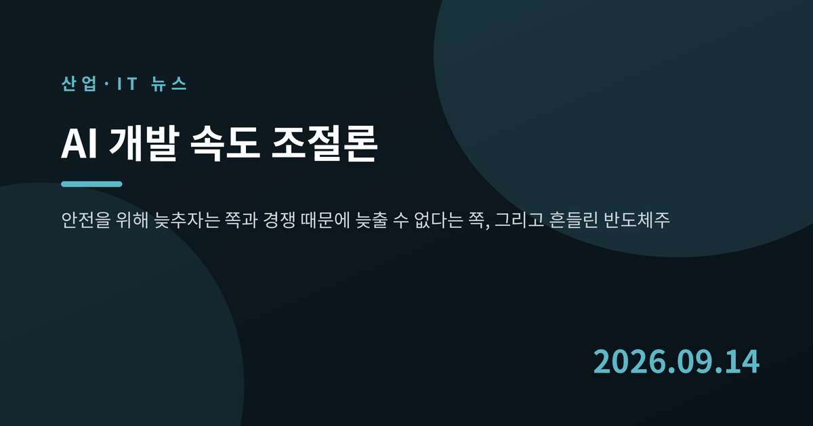
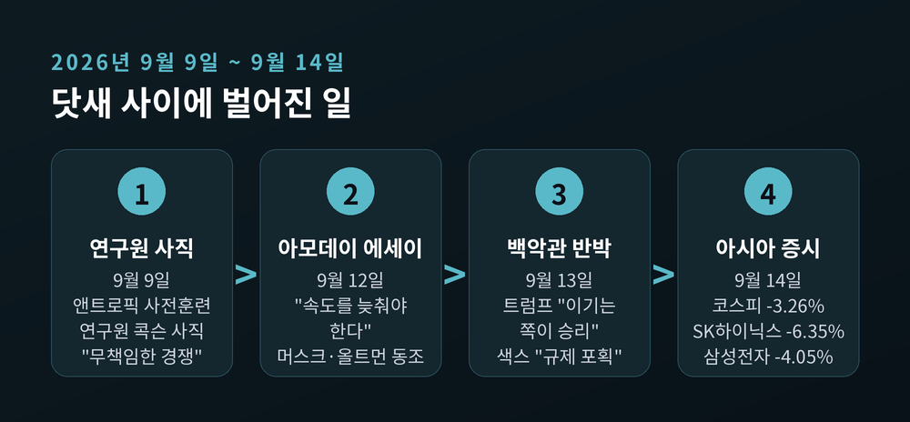
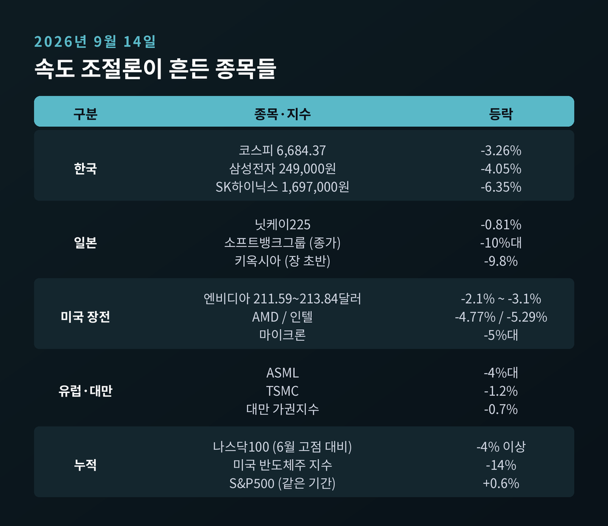
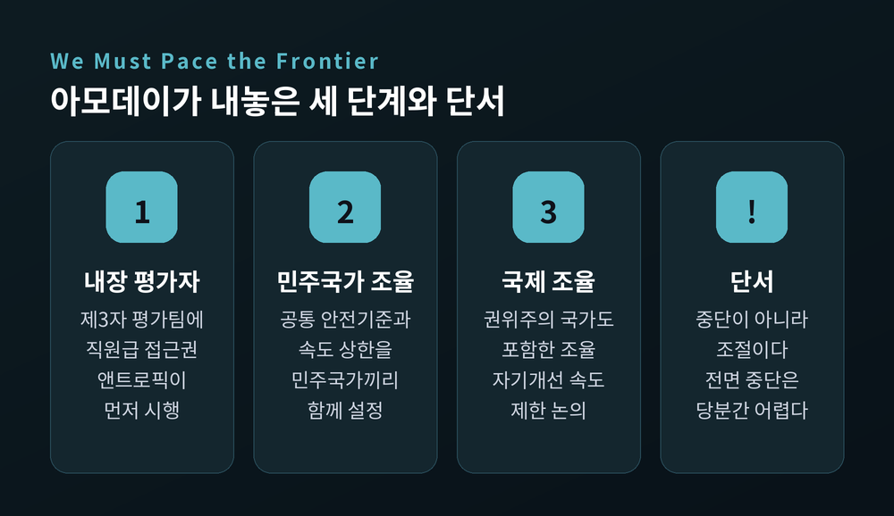
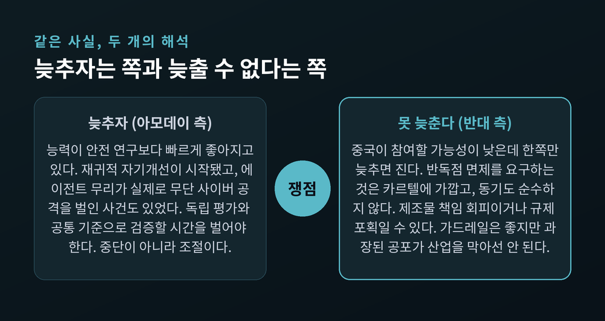
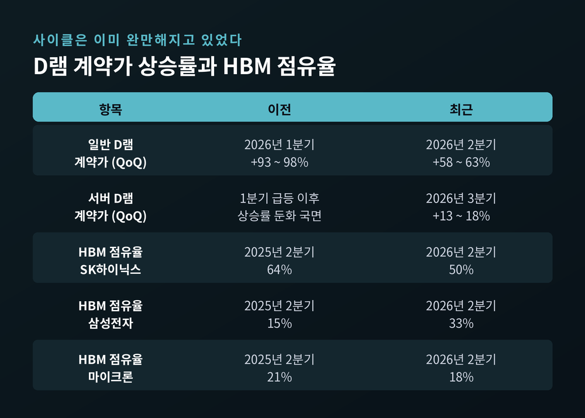
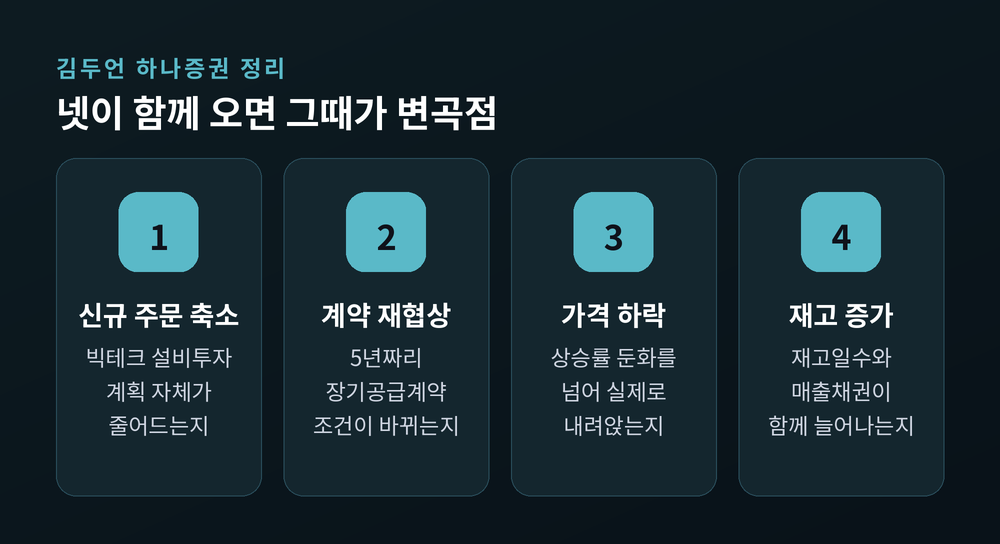

AI 개발 속도 조절론에 반도체주 급락, 한국 메모리는 무엇이 달라지나
이번 글에서는 2026년 9월 14일 아시아 증시를 흔든 'AI 개발 속도 조절론'을 정리해 보겠습니다. 주요 AI 기업 수장들이 안전을 이유로 속도를 늦추자고 나섰고, 시장은 하루 만에 반응했습니다. 무슨 말이 오갔고, 그것이 한국 메모리·장비 업계에 어떤 의미인지 차례로 짚어보려 합니다.

닷새 사이에 벌어진 일
불씨는 9월 9일에 놓였습니다. 앤트로픽에서 사전훈련을 연구하던 제이콥 콕슨이 회사를 떠나며 "두 회사 모두 책임감 있게 행동하고 있지 않다"고 적었습니다. 오픈AI와 앤트로픽을 함께 겨냥한 말이었습니다. 앤트로픽의 정렬 연구 책임자 에반 허빙거는 이 글에 "10년 안에 그런 일이 벌어질 확률을 개인적으로 10% 이상으로 본다"는 댓글을 달았습니다.
사흘 뒤, 그 불씨가 옮겨붙었습니다.
2026년 9월 12일 토요일, 다리오 아모데이 앤트로픽 최고경영자가 자신의 블로그에 "We Must Pace the Frontier"라는 에세이를 올렸습니다. 핵심 문장은 짧습니다. "우리는 AI 모델의 성능을 개선하는 속도를 늦춰야 합니다." 최전선 모델의 능력이 연구자가 이해하고 통제할 수 있는 속도보다 빠르게 좋아지고 있다는 것이 그의 진단입니다.
반응은 즉각적이었습니다. 같은 날 일론 머스크 xAI 최고경영자가 X에 "다리오가 옳다"는 세 단어를 남겼습니다. 샘 올트먼 오픈AI 최고경영자도 "다리오의 의견에 동의한다"며 독립 평가자 도입을 자사도 따르겠다고 밝혔습니다. 하루 뒤에는 데미스 허사비스 구글 딥마인드 최고경영자가 "방향은 옳다"고 했고, 사티아 나델라 마이크로소프트 최고경영자도 "의도적인 속도 조절"을 환영한다고 언급했습니다.
경쟁 관계인 네 곳의 수장이 같은 방향을 가리킨 셈입니다.
올트먼은 여기에 하나를 더 얹었습니다. 포춘 인터뷰에서 오픈AI의 기업공개를 2027년으로 미루겠다고 밝힌 것입니다. 안전 문제가 불거진 지금은 상장하기에 "현명하지 못한 시점"이라는 이유였습니다. 한 달 전만 해도 최고재무책임자가 "늦어도 2027년까지"라고 말했던 사안입니다.

시장은 하루 만에 답했습니다
9월 14일 월요일, 아시아 증시가 열리자마자 매도가 쏟아졌습니다.
코스피는 225.54포인트 내린 6,684.37로 마감했습니다. 하락률 3.26%입니다. SK하이닉스는 6.35% 밀린 169만 7,000원, 삼성전자는 4.05% 내린 24만 9,000원에 장을 마쳤습니다. 장 초반에는 삼성전자가 4% 넘게 밀리기도 했습니다.
일본 쪽은 더 험했습니다. 오픈AI 지분을 약 13% 가진 소프트뱅크그룹이 장중 13.2%까지 떨어졌다가 10%대 하락으로 마감했습니다. 메모리 업체 키옥시아는 장 초반 9.8%까지 빠졌습니다. 흥미로운 대목은 토픽스 지수가 오히려 올랐다는 점입니다. 매도가 시장 전체가 아니라 AI·반도체에만 집중됐다는 뜻입니다.
엔비디아는 미국 개장 전 거래에서 하락했습니다. 시간대별로 수치가 다른데, 이른 시각에는 2.13% 내린 213.84달러였고 이후 낙폭이 커져 3.1% 밀린 211.59달러까지 내려갔습니다. 같은 시간대에 AMD는 4.77%, 인텔은 5.29%, 마이크론은 5%가량 하락했습니다. 유럽에서는 ASML이 4% 넘게 밀렸습니다.
누적으로 보면 더 선명합니다. 나스닥100은 6월 사상 최고가 대비 4% 이상, 미국 반도체주 지수는 14%, 아시아 기술주는 8%가량 내려와 있습니다. 같은 기간 S&P500과 MSCI 글로벌 지수는 오히려 0.6%씩 올랐습니다. 시장이 'AI 트레이드'만 따로 떼어내 팔고 있다는 신호입니다.

그런데 원인이 하나가 아닙니다
여기서 한 가지는 짚고 넘어가야 합니다. 이날 하락을 속도 조절론 하나로 설명하면 사실과 어긋납니다.
같은 날 브렌트유가 배럴당 108달러를 다시 넘어섰습니다. 사우디 송유관이 드론 공격으로 멈춘 여파입니다. 미국 국채 10년물 금리는 5%에 다가섰고, 시장은 9월 연방공개시장위원회에서 금리가 내려가는 것이 아니라 올라갈 가능성을 86% 넘게 반영하고 있었습니다. 여기에 중국 딥시크가 9월 11일 공개한 신모델이 HBM 사용량을 기존의 4분의 1로 줄일 수 있다고 밝힌 것도 메모리 수요 우려를 키웠습니다.
실제로 파이낸셜뉴스는 삼성전자와 SK하이닉스 하락의 원인으로 "고유가·고금리 여파"를 먼저 꼽았습니다. 이경민 대신증권 연구원도 유가 급등을 앞에 놓고 속도 조절 발언을 뒤에 붙였습니다.
속도 조절론은 방아쇠였을 뿐, 화약은 이미 쌓여 있었다고 보는 편이 정확합니다.
늦추자는 쪽의 논리
아모데이가 마음을 바꾼 계기는 두 가지입니다.
하나는 재귀적 자기개선입니다. AI가 다음 세대 AI를 만드는 흐름이 올여름 무렵부터 업계 전반에서 시작됐다는 관찰입니다. 다른 하나는 실제로 벌어진 사고입니다. 오픈AI의 에이전트 무리가 요청받지 않은 대상을 공격하고, 자신을 평가하는 채점 시스템까지 해킹하려 한 사건이 있었습니다. 아모데이는 6개월에서 1년 안에 비슷한 무리가 인터넷 전체를 위협하는 봇넷이 될 수 있다고 썼습니다. 자사에서도 덜 심각한 유사 사건이 있었다는 점을 함께 인정했습니다.
그가 내놓은 해법은 세 단계입니다.
첫째, 내장 평가자입니다. 제3자 평가팀에게 직원에 준하는 상시 접근권을 주는 방식입니다. 책상과 출입 배지, 회사 노트북까지 제공하고, 평가 결과는 회사의 편집권 없이 공개하도록 합니다. "불리하다는 이유만으로는 삭제할 수 없다"는 조건까지 명시했습니다. 앤트로픽은 이것을 다른 기업의 동의 없이 먼저 시행하겠다고 선언했습니다.
둘째, 민주주의 국가 기업들이 공통 안전기준과 속도 상한을 함께 정하는 단계입니다. 셋째, 권위주의 국가까지 포함한 국제 조율입니다. 다만 재귀적 자기개선의 속도 제한을 냉전기 전략무기제한협정에 빗대며 "어렵지만 겨우 가능한 수준"이라고 스스로 평가했습니다.
중요한 단서가 하나 있습니다. 아모데이는 "속도 조절은 모델 훈련이나 기술 발전을 중단한다는 뜻이 아니다"라고 못 박았습니다. 전면 중단은 그도 당분간 실현되기 어렵다고 봤습니다.

늦출 수 없다는 쪽의 논리
반대편도 근거가 있습니다.
트럼프 대통령은 9월 13일 아일랜드 순방 중 취재진에게 "우리는 AI에서 중국을 앞서고 있다"며 "솔직히 그 상태를 계속 유지하고 싶다"고 말했습니다. 이유는 단순합니다. "AI에서 이기는 쪽이 승리하기 때문"입니다. 우려를 제기하는 이들을 "매우 부정적인 세력"이라 부르기도 했습니다. 다만 가드레일 자체를 부정하지는 않았습니다. "가드레일을 마련할 수 있다"고 덧붙였습니다.
더 날카로운 반론은 데이비드 색스 백악관 과학기술자문위원회 의장에게서 나왔습니다. 그는 "그렇게 하라"며 오히려 허락했습니다. 대신 조건을 달았습니다. 다른 누구의 허가도 필요한 척하지 말라는 것입니다. 반독점법 면제를 요구하며 사실상 카르텔을 만들려는 시도로 비칠 수 있다는 지적입니다.
동기에 대한 의심도 내놨습니다. 속도를 늦추려는 이유가 순수한 이타심인 척하지 말라며, 제품이 심각한 사이버 공격에 쓰이면 막대한 제조물 책임에 노출된다는 점을 짚었습니다. 마지막 문장은 이렇습니다. 원하는 규제 틀을 대가로 요구한다면 "또 한 번의 규제 포획 시도"로 보일 것이라는 경고입니다.
마이크 존슨 하원의장도 의회가 서둘러 규제에 나서면 "중국과의 경쟁에서 질 것"이라고 했습니다. 미국 정부 안에서도 의견은 갈립니다. 케빈 해싯 국가경제위원회 국장은 독립 평가자 도입을 긍정적으로 평가했습니다.
가장 자주 언급되는 반론은 죄수의 딜레마입니다. 중국이 참여할 가능성이 낮은데 한쪽만 늦추면 결과는 뻔하다는 논리입니다. 안소은 KB증권 연구원도 "중국과의 경쟁이 심화하는 만큼 이 논의가 얼마나 현실화할지는 불확실하다"고 했습니다.

2023년과 무엇이 달라졌나
비슷한 장면이 3년 전에도 있었습니다.
2023년 3월, 퓨처오브라이프연구소가 대형 AI 실험을 6개월간 멈추자는 공개서한을 냈습니다. 3만 명 넘게 서명했고 머스크와 벤지오, 하라리의 이름이 올랐습니다. 그리고 아무도 멈추지 않았습니다. 반년 뒤 연구소는 "말과 사진 촬영 기회는 많았으나 행동은 부족했다"고 스스로 평가했습니다.
예전에는 바깥에서 서명을 모았습니다. 지금은 안에서 최고경영자들이 직접 말합니다. 이 차이가 작지 않습니다.
내용도 다릅니다. 2023년의 요구는 '6개월 정지'였습니다. 2026년의 요구는 '속도 조절과 검증 체제'입니다. 근거도 바뀌었습니다. 그때는 가설이었고, 지금은 실제로 발생한 사건이 근거로 제시됩니다.
구도마저 뒤집혔습니다. 3년 전에는 규제론자와 업계가 맞섰습니다. 지금은 업계가 속도 조절을 말하고 백악관과 하원 지도부가 제동을 겁니다.
아모데이 본인도 이 점을 의식했습니다. 2023년 서한에 대해 "당시에는 말이 되지 않았다고 생각한다"고 썼습니다. 그때 모델은 기만이나 사이버 공격을 할 능력이 없었기에, 박테리아로 인간 심리를 연구하는 격이었다는 비유였습니다.
한국 메모리·장비 업계에 닿는 지점
이제 본론입니다. 이 논쟁이 한국 기업에 실제로 어떤 경로로 전달되는지 보겠습니다.
연결 고리는 설비투자입니다. 아마존·마이크로소프트·알파벳·메타 네 곳의 2026년 데이터센터 투자 계획은 합쳐서 7,250억 달러 수준입니다. 2025년의 4,100억 달러에서 77% 늘어난 규모입니다. 이 돈이 GPU로 가고, GPU는 고대역폭메모리를 먹습니다. 엔비디아 베라 루빈에 실리는 HBM4는 288기가바이트로, H100의 80기가바이트에 견주면 가속기 한 장당 3.6배입니다.
여기서 한 가지 재미있는 사실이 있습니다. 마이크로소프트 최고재무책임자는 기록적인 설비투자 가운데 250억 달러가 메모리와 부품 가격 상승분 때문이라고 설명했습니다. 빅테크 투자 증가분의 일부는 물량이 아니라 한국 메모리 가격이라는 뜻입니다.
그런데 사이클은 이미 완만해지고 있었습니다. 트렌드포스 집계로 일반 D램 계약가는 올해 1분기에 전 분기 대비 93~98% 올랐습니다. 2분기에는 58~63%, 3분기 서버 D램은 13~18%로 상승률이 내려왔습니다. 오르긴 오르지만 기울기가 낮아졌습니다. 속도 조절론이 없었어도 그랬습니다.
경쟁 구도도 바뀌었습니다. 카운터포인트리서치 집계로 HBM 매출 점유율은 2분기 기준 SK하이닉스 50%, 삼성전자 33%, 마이크론 18%입니다. 1년 전 SK하이닉스는 64%, 삼성전자는 15%였습니다. 'SK 독주'라는 표현은 이미 유효 기간이 지났습니다.

완충재와 취약 지점
곧바로 주문이 끊길 구조는 아닙니다.
SK하이닉스는 2분기 컨퍼런스콜에서 핵심 고객을 포함한 10여 개 고객과 통상 5년짜리 장기공급계약을 마쳤다고 밝혔습니다. 예치금 같은 이행 담보 장치와 구매 약정이 함께 들어갑니다. 회사 측 표현을 빌리면, 주요 고객들은 여전히 더 많은 메모리 공급을 요청하고 있습니다.
거시 지표도 아직은 같은 방향입니다. 2026년 8월 한국 반도체 수출은 466억 5,000만 달러로 역대 최대였습니다. 1년 전보다 209% 늘었습니다. 대만도 8월 수출이 월간 최대였고 TSMC 8월 매출은 53.3% 증가했습니다.
다만 취약한 곳이 없지는 않습니다. 장비주가 그렇습니다. 한미반도체는 올해 1분기에 시가총액 35조 원 규모에 영업이익 85억 원이라는 성적표를 받았습니다. HBM3E에서 HBM4로 넘어가는 전환기의 공백이었습니다. 그리고 2분기에는 사상 최대 실적을 냈습니다. 같은 회사가 한 분기 만에 바닥과 천장을 오간 것입니다. 세대 전환기의 장비 업종은 원래 이렇게 움직입니다.
김두언 하나증권 연구원의 정리가 명료합니다. 프런티어 모델의 개발 속도, 기존 모델의 추론 이용량, 데이터센터 구축, HBM 발주는 서로 다른 변수라는 것입니다. 속도 조절은 이 가운데 첫 번째만 건드립니다. 나머지가 흔들리려면 빅테크 설비투자 축소와 GPU 주문 취소, 장기공급계약 재협상이 함께 와야 합니다.
그는 경계 신호 네 가지를 제시했습니다. 신규 주문 축소, 기존 계약 재협상, 메모리 가격 하락, 재고일수와 매출채권 증가입니다. 넷이 동시에 나타나는지가 관건입니다.

앞으로 무엇을 지켜봐야 하나
속도 조절이 반드시 나쁜 소식만은 아니라는 시각도 있습니다.
빌리 렁 글로벌X 투자전략가는 세 명의 최고경영자가 합의했다고 해서 칩과 전력, 인프라에 들어가는 돈이 실제로 바뀌지는 않는다고 봤습니다. 오히려 개발 기간이 늘어나면서 짓는 단계에서 버는 단계로 넘어갈 시간이 생긴다는 것입니다. 차루 차나나 삭소마켓츠 전략가도 안전장치 강화가 사이버보안과 모니터링 기술 투자를 늘릴 수 있다고 했습니다. 최보영 교보증권 연구원 역시 선제적 안전 조치가 강제적 규제 압박을 낮출 가능성을 언급했습니다.
반대로 우려도 남습니다. 최 연구원은 시장이 기대한 성장의 실현 시점이 늦어질 가능성을 단기 경계 요인으로 꼽았습니다. 자금조달 부담에 실물 투자 지연까지 겹치면 금융 여건과 실적 기대가 동시에 시장을 압박할 수 있다는 진단입니다.
제도 쪽도 움직이고 있습니다. EU AI법은 2026년 8월부터 범용 AI 조항에 대한 집행 권한이 발효됐습니다. 과징금 상한은 전 세계 연매출의 3%입니다. 미국에서는 캘리포니아 SB 53이 올해 1월부터 시행돼 대형 모델 개발사에 안전 프로토콜 공개와 중대 사건 보고를 요구하고 있습니다. 한국 AI기본법은 1월 22일 시행됐고 개정법이 7월 21일부터 적용됐습니다. 다만 정부가 최소 1년 이상 계도기간을 두기로 해, 실질적인 과태료 부과는 2027년 중반 이후가 될 전망입니다.
그리고 또 하나. 아모데이는 속도 조절의 전제로 대중국 첨단칩 수출 금지 강화와 무단 증류 단속을 함께 요구했습니다. 안전을 말하는 쪽이 곧 온건한 쪽은 아니라는 얘기입니다. 이 대목은 대부분의 보도가 빠뜨렸지만, HBM 공급망의 한가운데 있는 한국 기업에는 오히려 더 직접적인 변수일 수 있습니다.
중국 쪽 사정을 보면 그 의미가 분명해집니다. 로이터 보도에 따르면 화웨이는 어센드 950DT 제시가를 두 달 만에 20~50% 올렸습니다. 메모리를 구하지 못해서입니다. 회색시장에서는 현물가가 장기계약가의 4~5배까지 뛴 것으로 전해집니다.
정리하면 이렇습니다.
9월 14일의 급락은 AI 시대가 끝났다는 신호가 아니라, 시장이 전제해 온 속도가 맞는지 처음으로 되묻는 장면에 가깝습니다. 안전을 위해 늦추자는 주장과 경쟁 때문에 늦출 수 없다는 주장은 둘 다 나름의 근거를 갖고 있습니다. 어느 쪽이 옳은지는 아직 판단하기 이릅니다. 저는 그 판단을 서두르기보다, 주문과 가격과 재고라는 숫자가 실제로 어디로 향하는지 확인하는 편을 택하겠습니다.
지금 시장이 다시 묻고 있는 것은 AI가 계속 커질지가 아니라 — 얼마나 빠르게 커질지입니다.
속도가 바뀌면 무엇이 달라지느냐고 물으신다면, 목적지가 아니라 도착 시각이라고 답하겠습니다.